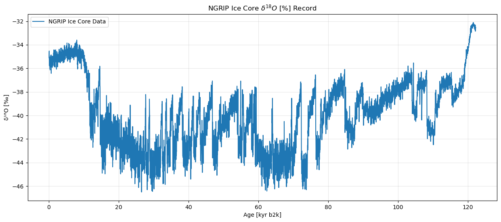
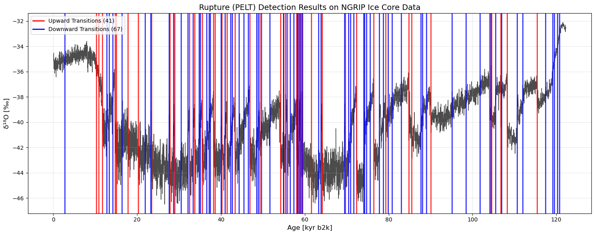
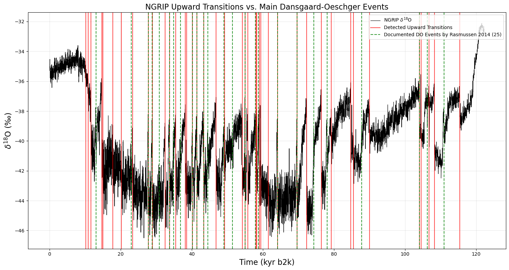

# Import libraries and packages
import ammonyte as amt
import pandas as pd
import numpy as np
import matplotlib.pyplot as plt
import time
import psutil
import os
import gcDetecting Tipping Points with Ammonyte’s Ruptures Wrapper
Load the NGRIP Dataset for Tipping Point Analysis
Dataset Overview
The North Greenland Ice Core Project (NGRIP) dataset contains high-resolution paleoclimate proxy data from Greenland ice cores. This dataset is particularly valuable for studying abrupt climate transitions and tipping points in the Earth’s climate system.
Key Dataset Features: - Proxy Variable: \(\mathrm{\delta^{18}O}\) isotope measurements - Units: per mil - Time Scale: Thousands of years before present (kyr b2k)
# Load NGRIP dataset
ngrip = amt.Series.from_csv('../ammonyte/data/NGRIP.csv')Time axis values sorted in ascending order
Time axis values sorted in ascending orderDataset Metadata Summary
Display key metadata information from the loaded NGRIP time series to understand the dataset characteristics.
# Display metadata
print(f"Loaded NGRIP dataset: {ngrip.label}")
print(f"Time range: {ngrip.time.min():.2f} - {ngrip.time.max():.2f} {ngrip.time_unit}")
print(f"Number of data points: {len(ngrip.time)}")
print(f"Value range: {ngrip.value.min():.2f} - {ngrip.value.max():.2f} {ngrip.value_unit}")
print(f"Evenly spaced: {ngrip.is_evenly_spaced()}")Loaded NGRIP dataset: NGRIP Ice Core Data
Time range: 0.05 - 122.27 kyr b2k
Number of data points: 6112
Value range: -46.50 - -32.11 ‰
Evenly spaced: TrueNGRIP \(\mathrm{\delta^{18}O}\) Record Visualization
The plot below shows the complete NGRIP ice core record, where: - X-axis: Time in thousands of years before present (kyr b2k) - Y-axis: \(\mathrm{\delta^{18}O}\) isotope values in per mil - Interpretation: More negative values indicate colder conditions
# The NGRIP series is already loaded with proper metadata
#plot the time series to visualize the data
fig, ax = ngrip.plot(figsize=(15, 6))
ax.set_title('NGRIP Ice Core $\delta^{18}O\ [\%]$ Record')
ax.grid(True, alpha=0.3)
Main Rupture Analysis
This section demonstrates the complete Rupture workflow for detecting climate transitions in the NGRIP dataset. We use Pelt algorithm with l2 cost function as the recommended default configuration.
Workflow Steps: 1. Apply Rupture detection with recommended settings 2. Examine detected transitions 3. Visualize results on NGRIP time series 4. Load known Dansgaard-Oeschger (DO) events for validation 5. Quantitative validation against main DO events 6. Visualization of detected vs. known events
Step 1: Apply Rupture Detection (Default Configuration)
Recommended Configuration: - Algorithm: Pelt - Cost function: l2 - Penalty: 10
# Apply Rupture detection with recommended settings
transitions = ngrip.ruptures(algo='Pelt', cost='l2', pen=10)Step 2: Results Summary
The output shows the number of detected change-points and details for each transition including timing, direction, and location in the time series.
# Print transition results
print(transitions)
detected_times = transitions.jump_times[~np.isnan(transitions.jump_times)]Deterministic Transition Detection Results - NGRIP Ice Core Data | ruptures
===========================================================================
+----------+---------------------+----------------+------------------+---------------------+
| Method | Total Transitions | Upward Jumps | Downward Jumps | Series Label |
+==========+=====================+================+==================+=====================+
| ruptures | 108 | 41 | 67 | NGRIP Ice Core Data |
+----------+---------------------+----------------+------------------+---------------------+
Transition Details:
1. Time: 2.77 kyr b2k, Direction: Downward, breakpoint_indices: 136.0000
2. Time: 10.21 kyr b2k, Direction: Upward, breakpoint_indices: 508.0000
3. Time: 10.87 kyr b2k, Direction: Upward, breakpoint_indices: 541.0000
4. Time: 11.69 kyr b2k, Direction: Upward, breakpoint_indices: 582.0000
5. Time: 12.77 kyr b2k, Direction: Downward, breakpoint_indices: 636.0000
6. Time: 13.29 kyr b2k, Direction: Downward, breakpoint_indices: 662.0000
7. Time: 14.19 kyr b2k, Direction: Downward, breakpoint_indices: 707.0000
8. Time: 14.69 kyr b2k, Direction: Upward, breakpoint_indices: 732.0000
9. Time: 14.99 kyr b2k, Direction: Upward, breakpoint_indices: 747.0000
10. Time: 16.37 kyr b2k, Direction: Downward, breakpoint_indices: 816.0000
11. Time: 17.83 kyr b2k, Direction: Upward, breakpoint_indices: 889.0000
12. Time: 20.25 kyr b2k, Direction: Upward, breakpoint_indices: 1010.0000
13. Time: 21.89 kyr b2k, Direction: Downward, breakpoint_indices: 1092.0000
14. Time: 23.25 kyr b2k, Direction: Downward, breakpoint_indices: 1160.0000
15. Time: 23.37 kyr b2k, Direction: Upward, breakpoint_indices: 1166.0000
16. Time: 27.57 kyr b2k, Direction: Downward, breakpoint_indices: 1376.0000
17. Time: 27.79 kyr b2k, Direction: Upward, breakpoint_indices: 1387.0000
18. Time: 28.61 kyr b2k, Direction: Downward, breakpoint_indices: 1428.0000
19. Time: 28.91 kyr b2k, Direction: Upward, breakpoint_indices: 1443.0000
20. Time: 30.49 kyr b2k, Direction: Downward, breakpoint_indices: 1522.0000
21. Time: 32.05 kyr b2k, Direction: Downward, breakpoint_indices: 1600.0000
22. Time: 32.51 kyr b2k, Direction: Upward, breakpoint_indices: 1623.0000
23. Time: 33.37 kyr b2k, Direction: Downward, breakpoint_indices: 1666.0000
24. Time: 33.75 kyr b2k, Direction: Upward, breakpoint_indices: 1685.0000
25. Time: 34.75 kyr b2k, Direction: Downward, breakpoint_indices: 1735.0000
26. Time: 35.03 kyr b2k, Direction: Downward, breakpoint_indices: 1749.0000
27. Time: 35.51 kyr b2k, Direction: Upward, breakpoint_indices: 1773.0000
28. Time: 36.61 kyr b2k, Direction: Downward, breakpoint_indices: 1828.0000
29. Time: 37.13 kyr b2k, Direction: Downward, breakpoint_indices: 1854.0000
30. Time: 37.43 kyr b2k, Direction: Downward, breakpoint_indices: 1869.0000
31. Time: 38.23 kyr b2k, Direction: Upward, breakpoint_indices: 1909.0000
32. Time: 38.53 kyr b2k, Direction: Upward, breakpoint_indices: 1924.0000
33. Time: 39.97 kyr b2k, Direction: Downward, breakpoint_indices: 1996.0000
34. Time: 40.17 kyr b2k, Direction: Upward, breakpoint_indices: 2006.0000
35. Time: 40.97 kyr b2k, Direction: Downward, breakpoint_indices: 2046.0000
36. Time: 41.47 kyr b2k, Direction: Upward, breakpoint_indices: 2071.0000
37. Time: 42.29 kyr b2k, Direction: Downward, breakpoint_indices: 2112.0000
38. Time: 42.69 kyr b2k, Direction: Downward, breakpoint_indices: 2132.0000
39. Time: 43.35 kyr b2k, Direction: Upward, breakpoint_indices: 2165.0000
40. Time: 44.29 kyr b2k, Direction: Downward, breakpoint_indices: 2212.0000
41. Time: 45.45 kyr b2k, Direction: Downward, breakpoint_indices: 2270.0000
42. Time: 46.45 kyr b2k, Direction: Downward, breakpoint_indices: 2320.0000
43. Time: 46.85 kyr b2k, Direction: Upward, breakpoint_indices: 2340.0000
44. Time: 48.47 kyr b2k, Direction: Downward, breakpoint_indices: 2421.0000
45. Time: 48.85 kyr b2k, Direction: Downward, breakpoint_indices: 2440.0000
46. Time: 49.29 kyr b2k, Direction: Upward, breakpoint_indices: 2462.0000
47. Time: 49.61 kyr b2k, Direction: Downward, breakpoint_indices: 2478.0000
48. Time: 51.67 kyr b2k, Direction: Downward, breakpoint_indices: 2581.0000
49. Time: 54.23 kyr b2k, Direction: Upward, breakpoint_indices: 2709.0000
50. Time: 54.91 kyr b2k, Direction: Downward, breakpoint_indices: 2743.0000
51. Time: 55.01 kyr b2k, Direction: Upward, breakpoint_indices: 2748.0000
52. Time: 55.43 kyr b2k, Direction: Downward, breakpoint_indices: 2769.0000
53. Time: 55.79 kyr b2k, Direction: Upward, breakpoint_indices: 2787.0000
54. Time: 56.47 kyr b2k, Direction: Downward, breakpoint_indices: 2821.0000
55. Time: 57.33 kyr b2k, Direction: Downward, breakpoint_indices: 2864.0000
56. Time: 58.05 kyr b2k, Direction: Upward, breakpoint_indices: 2900.0000
57. Time: 58.19 kyr b2k, Direction: Downward, breakpoint_indices: 2907.0000
58. Time: 58.27 kyr b2k, Direction: Upward, breakpoint_indices: 2911.0000
59. Time: 58.57 kyr b2k, Direction: Downward, breakpoint_indices: 2926.0000
60. Time: 58.87 kyr b2k, Direction: Downward, breakpoint_indices: 2941.0000
61. Time: 59.07 kyr b2k, Direction: Upward, breakpoint_indices: 2951.0000
62. Time: 59.33 kyr b2k, Direction: Downward, breakpoint_indices: 2964.0000
63. Time: 59.45 kyr b2k, Direction: Upward, breakpoint_indices: 2970.0000
64. Time: 61.51 kyr b2k, Direction: Upward, breakpoint_indices: 3073.0000
65. Time: 63.25 kyr b2k, Direction: Downward, breakpoint_indices: 3160.0000
66. Time: 63.87 kyr b2k, Direction: Downward, breakpoint_indices: 3191.0000
67. Time: 64.15 kyr b2k, Direction: Upward, breakpoint_indices: 3205.0000
68. Time: 69.43 kyr b2k, Direction: Downward, breakpoint_indices: 3469.0000
69. Time: 69.63 kyr b2k, Direction: Upward, breakpoint_indices: 3479.0000
70. Time: 70.39 kyr b2k, Direction: Downward, breakpoint_indices: 3517.0000
71. Time: 70.85 kyr b2k, Direction: Downward, breakpoint_indices: 3540.0000
72. Time: 71.67 kyr b2k, Direction: Downward, breakpoint_indices: 3581.0000
73. Time: 72.35 kyr b2k, Direction: Upward, breakpoint_indices: 3615.0000
74. Time: 74.07 kyr b2k, Direction: Downward, breakpoint_indices: 3701.0000
75. Time: 74.19 kyr b2k, Direction: Downward, breakpoint_indices: 3707.0000
76. Time: 74.69 kyr b2k, Direction: Downward, breakpoint_indices: 3732.0000
77. Time: 75.59 kyr b2k, Direction: Downward, breakpoint_indices: 3777.0000
78. Time: 76.45 kyr b2k, Direction: Upward, breakpoint_indices: 3820.0000
79. Time: 77.77 kyr b2k, Direction: Downward, breakpoint_indices: 3886.0000
80. Time: 78.75 kyr b2k, Direction: Downward, breakpoint_indices: 3935.0000
81. Time: 79.25 kyr b2k, Direction: Upward, breakpoint_indices: 3960.0000
82. Time: 79.87 kyr b2k, Direction: Downward, breakpoint_indices: 3991.0000
83. Time: 80.83 kyr b2k, Direction: Downward, breakpoint_indices: 4039.0000
84. Time: 83.01 kyr b2k, Direction: Downward, breakpoint_indices: 4148.0000
85. Time: 84.77 kyr b2k, Direction: Upward, breakpoint_indices: 4236.0000
86. Time: 85.45 kyr b2k, Direction: Upward, breakpoint_indices: 4270.0000
87. Time: 87.67 kyr b2k, Direction: Downward, breakpoint_indices: 4381.0000
88. Time: 88.07 kyr b2k, Direction: Downward, breakpoint_indices: 4401.0000
89. Time: 88.97 kyr b2k, Direction: Downward, breakpoint_indices: 4446.0000
90. Time: 90.05 kyr b2k, Direction: Upward, breakpoint_indices: 4500.0000
91. Time: 95.11 kyr b2k, Direction: Downward, breakpoint_indices: 4753.0000
92. Time: 98.49 kyr b2k, Direction: Downward, breakpoint_indices: 4922.0000
93. Time: 101.81 kyr b2k, Direction: Downward, breakpoint_indices: 5088.0000
94. Time: 104.05 kyr b2k, Direction: Upward, breakpoint_indices: 5200.0000
95. Time: 104.39 kyr b2k, Direction: Downward, breakpoint_indices: 5217.0000
96. Time: 104.53 kyr b2k, Direction: Upward, breakpoint_indices: 5224.0000
97. Time: 105.47 kyr b2k, Direction: Downward, breakpoint_indices: 5271.0000
98. Time: 106.77 kyr b2k, Direction: Upward, breakpoint_indices: 5336.0000
99. Time: 106.91 kyr b2k, Direction: Downward, breakpoint_indices: 5343.0000
100. Time: 108.29 kyr b2k, Direction: Upward, breakpoint_indices: 5412.0000
101. Time: 110.65 kyr b2k, Direction: Downward, breakpoint_indices: 5530.0000
102. Time: 111.95 kyr b2k, Direction: Downward, breakpoint_indices: 5595.0000
103. Time: 115.39 kyr b2k, Direction: Upward, breakpoint_indices: 5767.0000
104. Time: 117.43 kyr b2k, Direction: Downward, breakpoint_indices: 5869.0000
105. Time: 119.15 kyr b2k, Direction: Downward, breakpoint_indices: 5955.0000
106. Time: 119.51 kyr b2k, Direction: Downward, breakpoint_indices: 5973.0000
107. Time: 120.29 kyr b2k, Direction: Downward, breakpoint_indices: 6012.0000
108. Time: 120.77 kyr b2k, Direction: Downward, breakpoint_indices: 6036.0000
Method Parameters:
algo: Pelt
cost: l2
pen: 10.0
n_bkps: None
min_size: 2
jump: 1
width: None
Step 3: Transition Visualization
Display the NGRIP time series with detected change-points marked by vertical lines: - Red lines: Upward transitions (warming events) - Blue lines: Downward transitions (cooling events)
# Visualize detected transitions
fig, ax = plt.subplots(figsize=(15, 6))
transitions.plot(ax=ax, title='Rupture (PELT) Detection Results on NGRIP Ice Core Data')
plt.tight_layout()
plt.show()
Step 4: Load Known DO Events for Validation
To validate our detection results, we compare against published Dansgaard-Oeschger (DO) events, well-documented abrupt climate transitions in the NGRIP record. These events represent rapid warming episodes followed by gradual cooling during the last glacial period.
Reference: Rasmussen et al.(2014), A stratigraphic framework for abrupt climatic changes during the Last Glacial period based on three synchronized Greenland ice-core records
Note: Event timings are subject to chronological uncertainties from annual layer counting and dating techniques, which increase with depth.
# Define D/O event chronologies as numpy arrays for analysis
do_events = pd.read_csv('../ammonyte/data/DO_events.csv', comment = '#')
main_do_events = do_events['main_kyr_b2k'].dropna().values
print(len(main_do_events)) # The length of main DO events
all_do_events = do_events['all_kyr_b2k'].dropna().values
print(len(all_do_events)) # The length of all DO events25
73Step 5: Quantitative Validation Against Known DO Events
Dansgaard-Oeschger (DO) events are abrupt warming transitions, so we compare only detected upward transitions against the 25 main DO onset times from Rasmussen et al. (2014), using a ±500-year tolerance window.
# Filter to upward transitions only (DO events are abrupt warmings)
upward_mask = transitions.jump_values == 1
detected_upward = transitions.jump_times[upward_mask]
detected_upward = detected_upward[~np.isnan(detected_upward)]
# Evaluate detection performance against main DO events
results = amt.utils.evaluate_detection(detected_upward, main_do_events, tolerance=0.5)
print(results)Detection Evaluation Metrics
============================
Metrics calculated within tolerance = 0.5
Performance Scores:
+-----------+---------+
| Metric | Value |
+===========+=========+
| Precision | 0.3415 |
+-----------+---------+
| Recall | 0.56 |
+-----------+---------+
| F1 Score | 0.4242 |
+-----------+---------+
Detection Counts:
+-----------------+---------+
| Category | Count |
+=================+=========+
| True Positives | 14 |
+-----------------+---------+
| False Positives | 27 |
+-----------------+---------+
| False Negatives | 11 |
+-----------------+---------+
Summary:
Detected: 41 | Ground Truth: 25
Step 6: Validation Visualization
This plot shows the NGRIP time series with detected upward transitions and known Dansgaard-Oeschger (DO) events overlaid. Only upward transitions are shown since DO events are defined as abrupt warming onsets.
- Red lines: Detected upward transitions
- Green dashed lines: Known DO warming events (Rasmussen et al., 2014)
fig, ax = plt.subplots(figsize=(15, 8))
ax.plot(ngrip.time, ngrip.value, color='black', linewidth=0.8, label='NGRIP $\delta^{18}\mathrm{O}$')
# Plot only upward transitions
first_up = True
for t, direction in zip(transitions.jump_times, transitions.jump_values):
if direction > 0:
label = 'Detected Upward Transitions' if first_up else None
ax.axvline(x=t, color='red', alpha=0.7, linewidth=1.5, label=label)
first_up = False
# Add DO events
for i, event_time in enumerate(main_do_events):
if i == 0:
ax.axvline(event_time, color='green', linestyle='--', linewidth=1.5, alpha=0.8,
label=f'Documented DO Events by Rasmussen 2014 ({len(main_do_events)})')
else:
ax.axvline(event_time, color='green', linestyle='--', linewidth=1.5, alpha=0.8)
ax.set_xlabel('Time (kyr b2k)', fontsize=16)
ax.set_ylabel('$\delta^{18}\mathrm{O}$ (‰)', fontsize=16)
ax.set_title('NGRIP Upward Transitions vs. Main Dansgaard-Oeschger Events', fontsize=16)
ax.legend(loc='upper right')
ax.grid(True, alpha=0.3)
plt.tight_layout()
plt.show()
Conclusion
We see that the Pelt algorithm (l2 cost, penalty = 10) is able to identify 14 of 25 (56%) of the DO warming events documented by Rasmussen et al. (2014), with a precision of 34% (F1 = 0.42).
Pros: Highly flexible, Series.ruptures() exposes six search algorithms and multiple cost functions for different data types. Pelt automatically determines the number of change-points, so no fixed count is needed.
Major drawback: Like the KS test, ruptures algorithms detect structural breaks in statistical properties (mean, variance). They are well-suited to sharp amplitude shifts but say nothing about the dynamics. For dynamically-sensitive detection, see the LERM tutorial.
For the original ruptures library, see Truong et al. (2020).